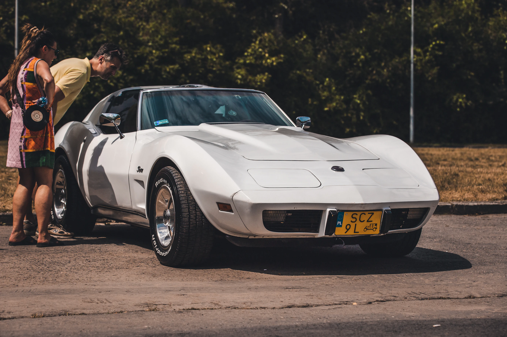
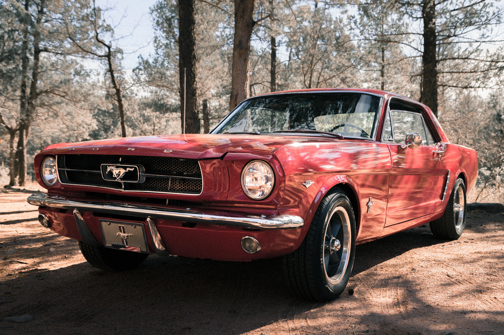
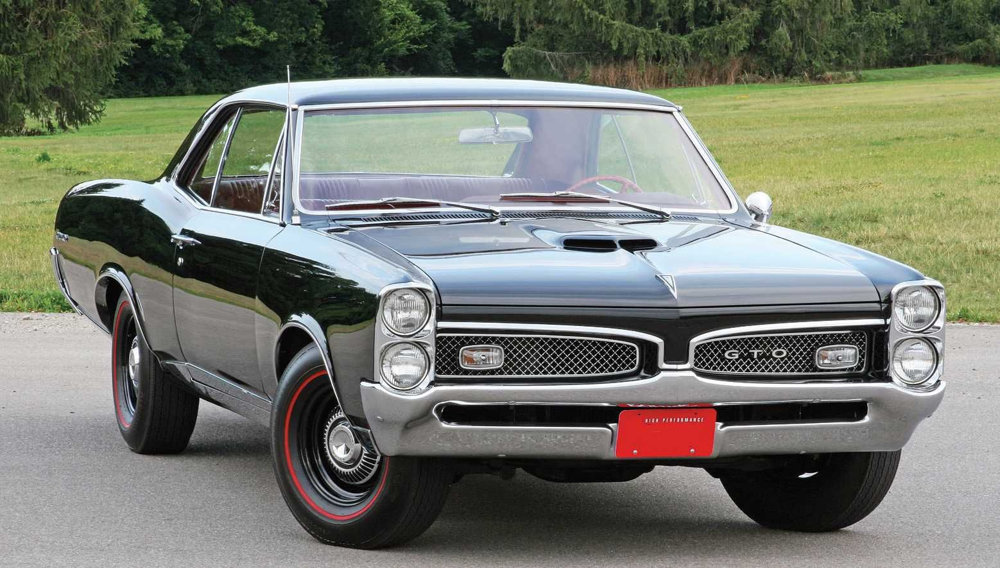

If you're looking to get into your first American classic, the 1968-1982 C3 Corvette is a hard choice to beat. A long production run and easy maintenance have kept C3 prices relatively low. It offers nearly the same V8 engine, timeless styling, and Corvette ownership experience of its C2 predecessor. What the two don't share is the latter's astronomical prices, which can go well over 100k.
 Check out current C3 prices here.A common debate within the classic car community is whether a car should be left in its original condition, or improved with newer parts. The good news is, a classic 1964-1973 Mustang lets you do both. The first generation of the Ford Mustang is a well-known, distinctevely styled muscle car. Its popularity has led to an enormous parts support base, perhaps the largest of any classic car. A Mustang is the perfect starting point for a project, with options offered for an exact factory restoration or modern modifications to its design and mechanicals.
 Browse a selection of Mustang parts.While many cars have had eight-cylinder engines before it, the 1964-1967 Pontiac GTO was the start of a novel idea. Take a regular car, tune the chassis, add wide tires, and equip it with the largest V8 available. The GTO was the start of a new era in American performance, when an otherwise regular family sedan could keep up with sports cars. This historical vehicle has been steadily appreciating among classic car collectors, and now might be the time to purchase one.
 Read more here about the history and development of the Pontiac GTO.